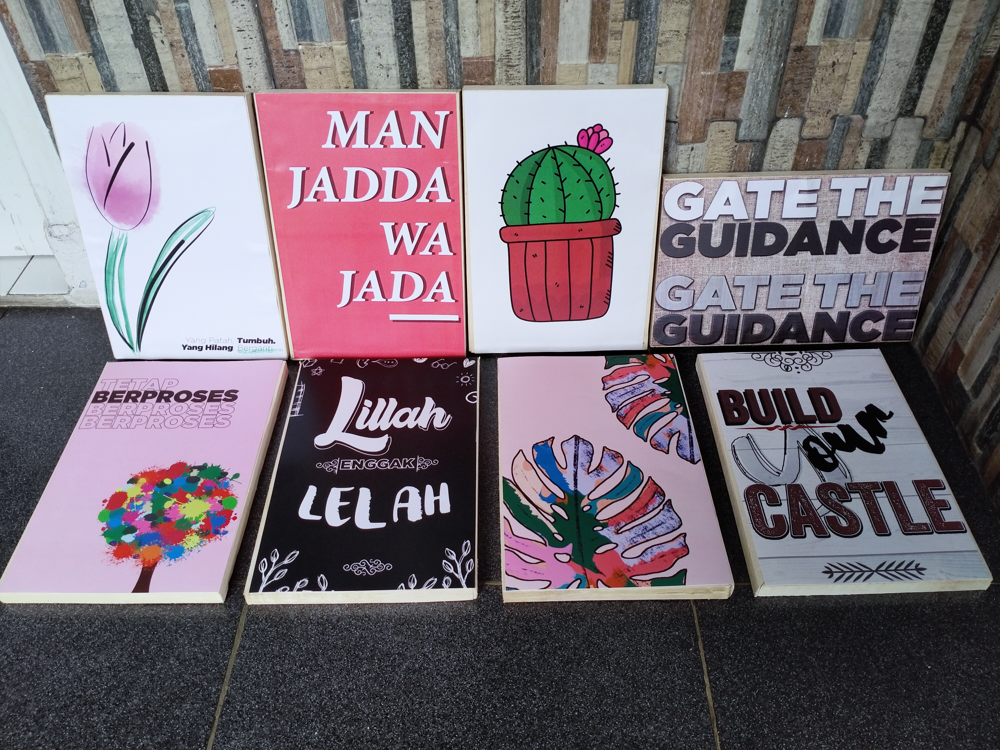
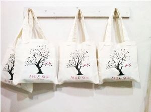
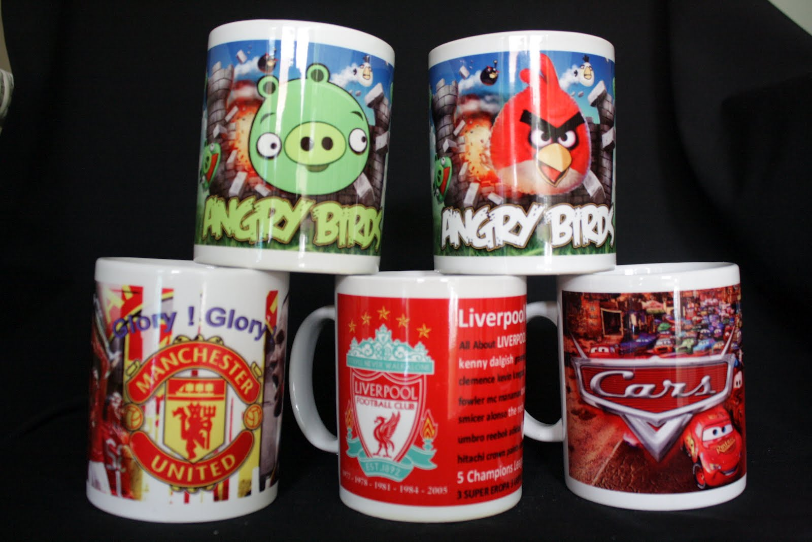
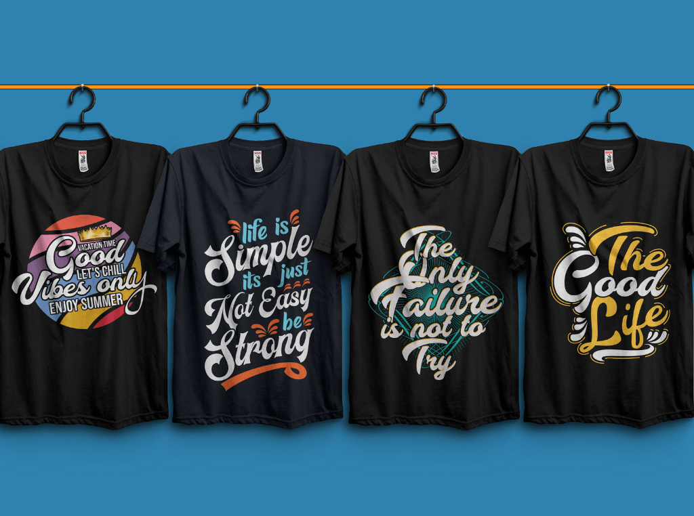

SA Desain
Sa Desain & Digital Printing
Desain Poster

Poster adalah karya seni atau desain grafis yang memuat komposisi gambar dan huruf di atas kertas berukuran besar atau kecil. Pengaplikasiannya dengan ditempel di dinding atau permukaan datar lainnya dengan sifat mencari perhatian mata sekuat mungkin.
Desain Tote Bag

Tote bag adalah suatu Tas belanja. Namun, Goodie Bag ini lebih indentik tas yang berbau fashion, anak muda, anak indie, anak milineal dan yang berhubungan dengan ranah tersebut. Di indonesia Goodie bag berkembang di akhir tahun 2016-sekarang, saat ini istilah untuk goodie bag sangat banyak.
Desain Mug

Mug adalah tipe alat minum sejenis cangkir yang umumnya digunakan untuk meminum minuman panas, seperti kopi, teh, atau coklat panas. Mok memiliki pegangan dan mampu menampung sejumlah fluida yang lebih banyak dari jenis alat minum lainnya.
Desain Kaos (Cotton Combed)

Kaos adalah jenis pakaian yang menutupi sebagian lengan, seluruh dada, bahu, dan perut. Kaus oblong biasanya tidak memiliki kancing, kerah, ataupun saku. Pada umumnya, kaus oblong berlengan pendek dan berleher bundar.